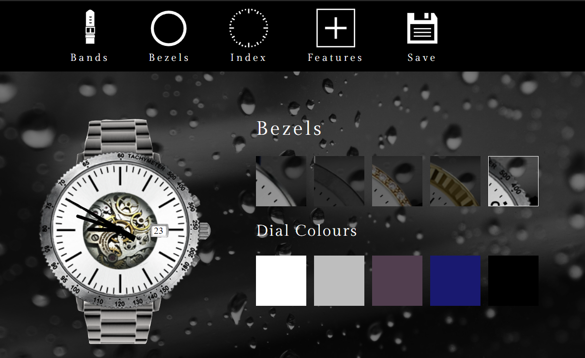
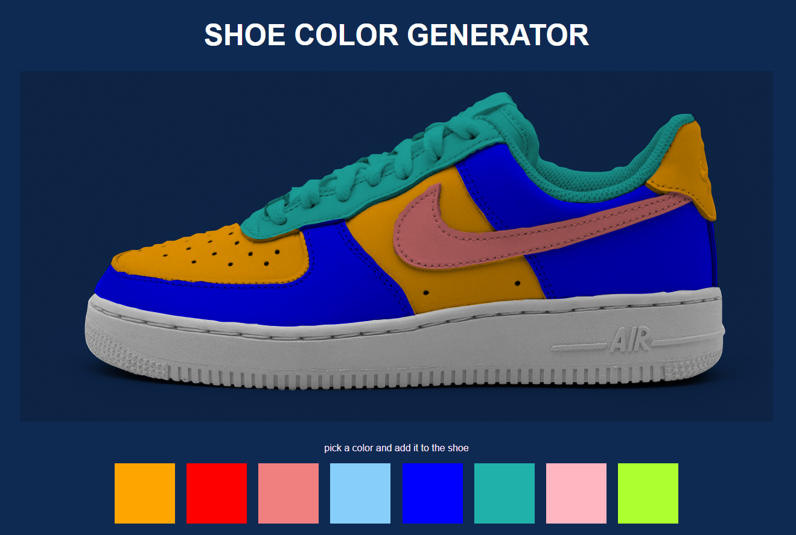
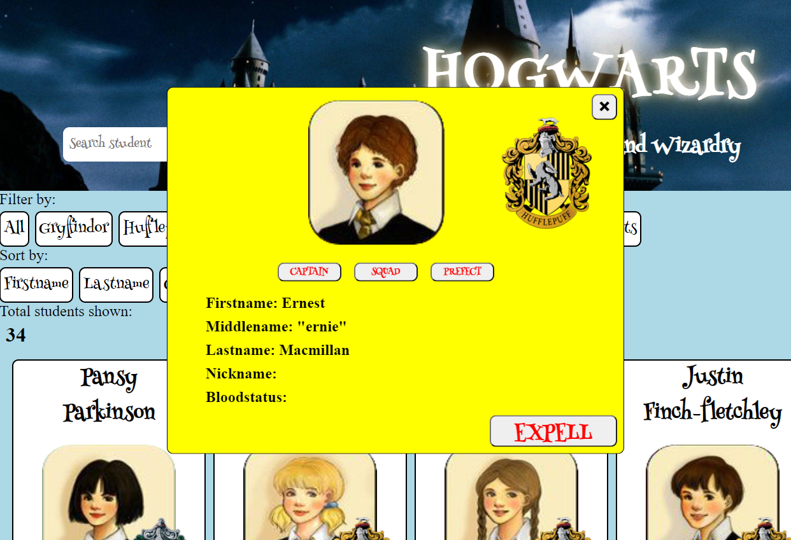
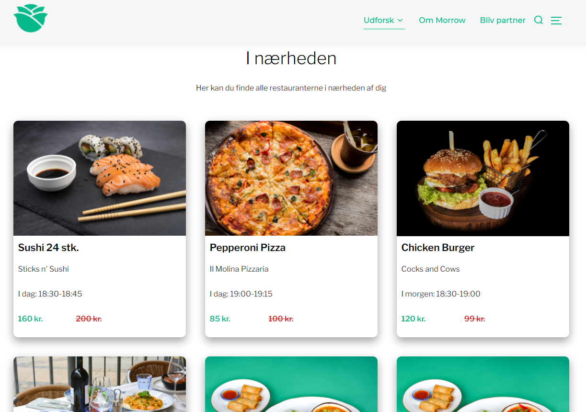
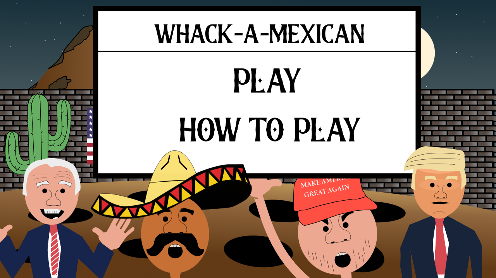

Some Things I've Built
Watch Generator
A minimalistic and dark themed watch generator. In this project we had a lot of focus on generating svg files in Photoshop and Illustrator and then manipulating these through Javascript. We wanted to make this as customizable as possible but since not all options go together we also put a lot of effort into make dependencies aswell meaning if you choose 1 type of bezel you might not be able to add accessories that does not fit the watch.
Rock, Paper, Scissors

Who doesn't like a good game of Rock, Paper, Scissors?! Very simpel mini game with focus optimizing javascript structure and the use of it-statements to determine the winner of each round.
Shoe Generator
Much like the watch generator I also created a shoe generator! In this case I selected specific parts of the shoe and through Photoshop/Illustrator I made these areas into SVG files to then manipulate them in Javascript. This project was mainly focused around having a color palette and then being able to select a color and add it to any part of the shoe.
Hacked Hogwarts Studentlist
Apperently someone tossed the list of all the students attending at Hogwarts, so I made a new one! With a small twist even. In this project we were given a JSON file with a list of all the students but with some spelling mistakes so the first thing I did was to clean all the data through Javascript. After having done that part this project was minded towards sorting and filtering the students both in alphabetically but also to sort the students by what house they are from or their gender.
Morrow Redesign
As my final project for my exam on my 2. semester of my studies at KEA my group redesigned the website for the take-away newcomers from Morrow. In close contact with the people behind Morrow we designed a solution with focus on making Morrows concept crystal clear for everyone. We even produced a explainer video to explain to everyone what the concept of Morrow was about.
Whack a Mexican
During the presidential election in 2020 between Donald Trump and Joe Biden I made this fun mini game. In the game you are controlling Donald Trump and you have to whack mexicans trying to cross the border between Mexico and the US.